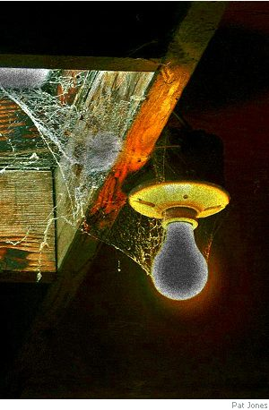
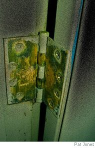

Louis Gallo
Forgetting Words
I have suddenly forgotten what words
like desultory and lapidary and permutation mean.
Has this happened to you? In mid-thought
or as your read a phrase or hear it intoned
by some blanched man in a tuxedo, words
you know intimately, the way you know
what pairs of socks are heaped in your drawer,
which spoon has the gouge that will shred
your tongue?
I suspect a beginning of sorts, the sprinter’s block
stretching toward a distant aphasic smudge
to ashen the finales. Aphasic?
Some insist it’s best to forget the excrescences.
Finale, though, ah... cream drizzling from a light bulb,
electromagnetic milk, blotched by a few dark lapses,
chunks of loose retina in a field of vision.
Until the bulb rattles and burns out.

Thinking of Keats’s Cold Living Hand
Truth is not beauty exactly;
it blurs in the stain on my paper cup,
fumes in a torn box of paper clips,
caws in brass hinges that don’t work.
My match flares in this dim room,
subsides, gives off sulphur.
I gaze at a picture of my daughter,
still only nine, eight hundred miles away.
She rests her chin on her knuckles,
wears the five-dollar watch I bought at K-Mart
and zebra sweat shirt from a catalog.
I hesitate to drop the match
even as fire inches close to my flesh.
You couldn’t let go either,
stretched blue fingers beyond the grave
for one last burning touch
as Beauty merely shrugged,
shifted beyond reach.
Incident with Blood
All I remember
is the chicken
tearing through our yard
without a head,
not who killed it,
why,
what happened next.
But the head —
I’ve seen it over the years,
often, blood gushing
from its open beak
like original words.
Louis Gallo was born and raised in New Orleans and now teaches at Radford Virginia. For examples of his fiction, see his work on Amazon Shorts.
|